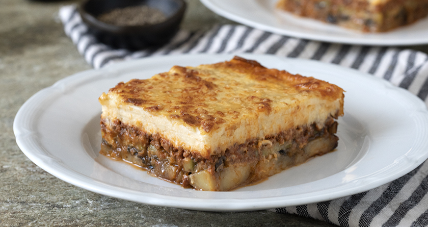

Mousakas Recipe!
Home

Description
Moussaka is the ultimate hallmark of Greek cuisine, a rich and hearty baked casserole that perfectly captures the vibrant flavors of the Mediterranean summer. The dish is masterfully layered, starting with a base of tender potatoes, sweet eggplants, and zucchini, followed by a savory, deeply seasoned minced beef or lamb sauce infused with the warm aromas of cinnamon, cloves, and allspice. Everything is topped with a thick, velvety blanket of fluffy béchamel sauce, sprinkled with sharp kefalotyri cheese, and baked to golden-brown perfection. Every single bite offers a sublime contrast of textures, beautifully balancing the melt-in-your-mouth vegetables, the robust and savory meat, and the rich, creamy sweetness of the custard-like topping.
Ingredients
Vegetables
- Eggplants: 3-4 large eggplants, sliced
- Potatoes: 3-4 medium potatoes, sliced
- Zucchini: 2-3 medium zucchini, sliced
- Olive oil: For brushing/frying
Meat Sauce
- Minced meat: 500g ground beef or lamb
- Onion & Garlic: 1 finely chopped onion and 2 minced garlic cloves
- Tomatoes: 1 can of crushed tomatoes and 1 tbsp tomato paste
- Wine: 1/2 cup dry white or red wine
- Spices: 1 cinnamon stick, a pinch of allspice, salt, and black pepper
Bechamel Sauce
- Butter: 100g unsalted butter
- Flour: 100g all-purpose flour
- Milk: 1 liter of whole milk, warmed
- BEggs: 2 egg yolks
- BCheese: 100g grated kefalotyri or parmesan cheese
- Nutmeg: A pinch of ground nutmeg
Steps
- Slice and salt: Cut the eggplants, potatoes, and zucchini into 1 cm slices, salt the eggplants, and let them drain for 20 minutes to remove bitterness.
- Bake the layers: Rinse the eggplants, pat them dry, brush all vegetables with olive oil, place them on baking sheets, and bake at 200°C (400°F) for 20-25 minutes until soft.
- Sauté and brown: Heat olive oil in a large pan, sauté the chopped onion and garlic until soft, then add the minced meat, breaking it up with a spoon until browned.
- Simmer to thicken: Stir in the tomato paste, pour in the wine to deglaze, add the crushed tomatoes and spices (cinnamon, allspice, salt, pepper), and simmer on low heat for 20-25 minutes until the liquids evaporate.
- Create the roux: Melt the butter in a saucepan over medium heat, add the flour, and whisk constantly for 1-2 minutes until a smooth paste forms
- Thicken and enrich: Gradually pour in the warm milk while whisking vigorously to avoid lumps, cook until thickened, then remove from heat and stir in the egg yolks, nutmeg, and half of the grated cheese.
- Layer the ingredients: Grease a deep baking dish, place the potatoes as the bottom layer, sprinkle with cheese, add the zucchini and eggplants, spread the meat sauce evenly on top, and discard the cinnamon stick.
- Top and bake: Pour the thick béchamel sauce over the meat, smooth the surface, sprinkle with the remaining cheese, and bake at 180°C (350°F) for 45-50 minutes until the top turns deeply golden-brown.
- Let the moussaka cool for at least 30-40 minutes before cutting so the layers stay beautifully intact when served!